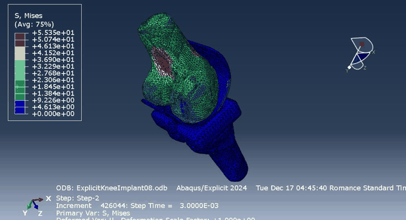
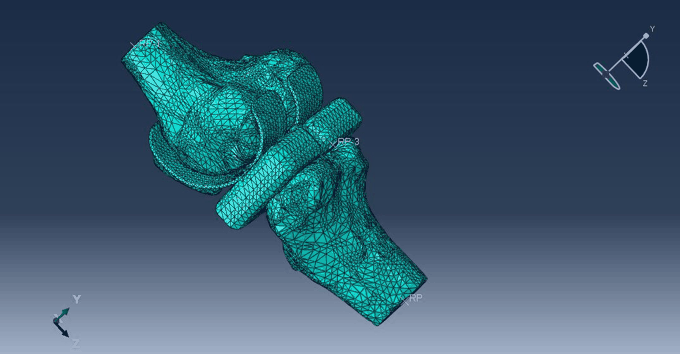
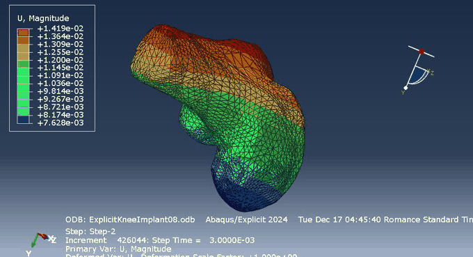
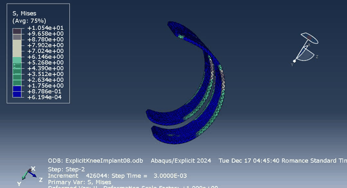

Knee Implant Biomechanics
Explicit-dynamics finite element study of load transfer through a total knee replacement implant, from bone–implant fixation to stress concentration on the implant itself.

Abstract
This project models a total knee replacement using explicit-dynamics finite element analysis in Abaqus. Starting from a CT/CAD-derived knee joint — femur, tibia, and patella — a cobalt–chromium femoral component and a metallic tibial component with a polyethylene spacer are fitted to the bones. The femoral and tibial implant parts are tied to their respective bones, while surface-to-surface contact is defined between the femoral component and the spacer to capture the sliding interface that governs implant wear and load transfer in vivo. Under load applied at the femur's reference point, stress and displacement concentrate almost entirely in the femur and femoral component within the simulated time window, with the tibia and tibial component comparatively unaffected — a load path consistent with a short-duration, femur-driven loading case. As with any explicit-dynamics model, the result is sensitive to mass scaling and simulated time period, and longer simulated durations would be needed to capture the full load transfer through the joint.
Simulation results


